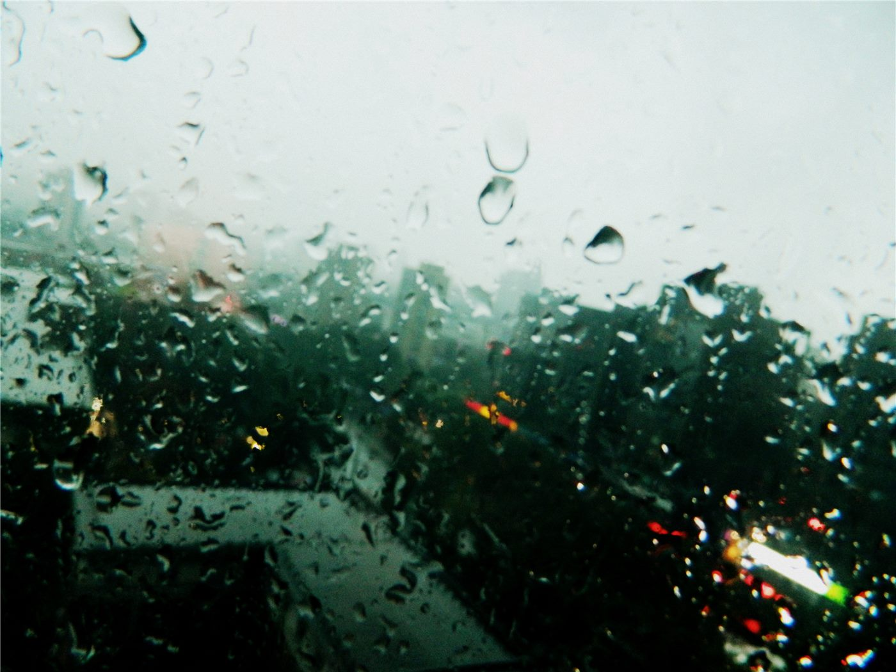

주말 중부지방 시간당 50~60㎜ ‘물폭탄’… 침수·낙석 등 700여 건 피해
주말 사이 중부지방에 시간당 50~60㎜의 폭우가 쏟아졌다. 침수와 낙석 등 피해 신고가 700여 건 접수됐다. 짧은 시간에 좁은 지역으로 집중되는 ‘극한 호우’가 다시 일상을 위협했다.
전홍발 기자 · 2026.07.21
橋한국

주말 중부지방에 시간당 50~60㎜의 강한 비가 내려 침수·낙석 등 700여 건의 피해 신고가 접수됐다고 경향신문이 전했다.
광고 문의 · 300×250이번 비는 짧은 시간에 특정 지역으로 집중되는 형태로 나타났다. 시간당 50㎜가 넘는 강우는 배수 용량을 넘어서 도로 침수와 지하 공간 침수를 유발하고, 경사지에서는 낙석과 토사 유출 위험을 높인다.
당국은 하천변과 저지대, 산사태 위험 지역의 접근 자제를 당부했다. 반지하·지하 주차장 등은 물이 순식간에 차오를 수 있어, 사전 대피가 무엇보다 중요하다는 점이 거듭 강조됐다.
기후 변화로 짧고 강한 국지성 호우의 빈도가 늘고 있다는 것이 기상 전문가들의 공통된 진단이다. 도시의 배수 인프라와 재난 경보 체계가 이런 ‘극한 강우’에 맞춰 재설계돼야 한다는 지적이 나온다.
재한 화인 가정에도 반지하·저지대 거주자가 있는 만큼, 호우 시 행동 요령과 대피 정보를 미리 확인해 두는 것이 안전을 지키는 첫걸음이다.
출처·참고 (사실 확인용 — 본문은 직접 재작성)
· 경향신문
· 경향신문